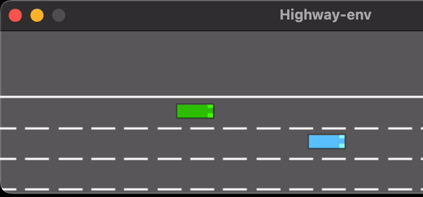

<li class="project-item  active" data-filter-item data-category="reinforcement learning">
    <div data-project-item>
      <figure class="blog-banner-box">
        <!-- Project GIF -->
        
      </figure>

      <div class="blog-content">
        <div class="blog-meta">
          <!-- Project Category -->
          <p class="blog-category" project-category>Reinforcement Learning</p>
          <span class="dot"></span>
          <!-- Project Date -->
          <time datetime="2024-06" project-date>May 2024</time>
        </div>
        <!-- Project Title -->
        <h3 class="h3 blog-item-title" project-title>Intrinsic Curiosity based RL on Pyramid Breaking Unity Environment</h3>
        <!-- Project Description -->
        <p class="blog-text" project-description hidden>
            An agent in the pyramid breaking environment needs to learn to explore the entire arena for the button and then try to find the pyramid which is highlighted to break it. 
            This project used Unity ML Agents Kit with PPO (Proximal Policy Optimization) to achieve 7 breaks in 2 minutes. Also, Random Network Distillation to encourage exploration was integrated to provide curiosity rewards based on novel discoveries and interactions.
        </p>
        <!-- Overlay: Github Link -->
        <div project-github-link hidden>https://github.com/RushiPDeshmukh/
        </div>
        <!-- Overlay: Keywords -->
        <div project-keywords hidden>Unity MLAgents, Self-Play, ELO score, </div>
        <!-- Overlay: Results Text -->
        <div project-result-text hidden>
        blah blah blah    
        </div>
        <!-- Overlay: Videos + Caption -->
        <div videos hidden>
        </div>
      </div>
    </div>
  </li>
